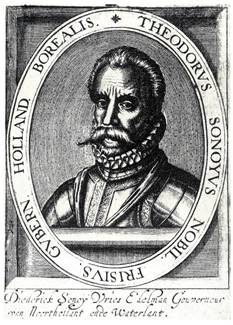
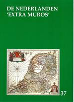

Wie zijn
bijdrage voor het jaar 2015 vereffende kon ondertussen al
uitgebreid kennis nemen van de inhoud van ons 37e jaarboek De Nederlanden ‘extra
muros’. Verderop leest u meer over de rijke inhoud van
het nieuwe jaarboek dat we u tot uiterlijk 30 augustus nog
kunnen aanbieden tegen de ledenprijs (waarin ook uw abonnement
op de Nieuwsbrief begrepen
is) van 29 €. Laat deze kans niet liggen.
Zannekin
Studie-uitstap
OnzeStudie-uitstap
komt er op zaterdag 3 oktober:
vanuit Halle verkennen we dan het oude Henegouwen
aan weerskanten van de ‘Schreve’. Alle info leest
u in onze volgende Nieuwsbrief.
‘Retour
aux Sources’
De jonge
Frans-Vlaming Pascal
Flament uit Rijsel liet zich ongetwijfeld inspireren door
het baanbrekende historische werk van wijlen Albert Delahaye,
bij het concipieren van zijn studie. Waar Delahaye destijds de
Nederlandse vroeggeschiedenis situeerde binnen de Franse
Nederlanden, komt Flament tot opzienbarende afwijkende
conclusies: niet binnen de Franse Nederlanden, wel veeleer
binnen de zuidelijke (Belgische) Nederlanden zou die
vroeggeschiedenis te situeren zijn. SEMafoor, het blad van
Studiekring Eerste Millenium, besteedde
in zijn nummer 2/2015 al uitgebreid aandacht aan het werkstuk
van Pascal Flament. ZANNEKIN-leden die door het onderwerp
geboeid zijn, kunnen via aan eenvoudig e-postverzoek de tekst
van Flaments studie als pdf-bestand opvragen.
Praktische gegevens m.b.t. de
meerdaagse reis
‘In het spoor van Willem I’, Koninkrijk der Nederlanden
- Royaume des Belgiques
Data: 21, 22,
23, 24, 25 augustus 2015 (vijf dagen)
Stramien: Dag
een: opstapplaatsen:
09.30 uur: Ukkel Stalle (Edouard Michielsstraat 51);
10.00 uur: Halle
Station – langs het kanaal Brussel – Charleroi
gegraven ten tijde van koning Willem I.
10.45 uur: vertrek Brussel
Centraal Station, Kardinaal Mercierstraat. In Brussel: rit langs o.a.
het Paleis der Academiën, de standbeelden van Willem van
Oranje, Marnix van Sint-Aldegonde, Brialmont en Cockerill. Rit
naar Antwerpen met stop te Waarloos (vrij middagmaal). In Antwerpen:
Willemsdok, het monument van de Merode (Berchem) en
Antwerpen Zuid, daar waar de citadel heeft gestaan en het
monument vanwege de tolvrijheid van de Schelde - monument
ter ere van Willem van Oranje en Marnix van Sint-Aldegonde.
Rit naar Den Haag met stop te Zundert. In Den
Haag: rit langs een aantal bezienswaardigheden. 19.00 uur
– Avondmaal en overnachting in Den Haag.
Dag twee:Den Haag en Delft: vertrek
om 09.00 uur: met tram van lijn 1 (Scheveningen – Delft) naar
Delft. In Delft: -
bezoek aan het Prinsenhof, daar waar Willem van Oranje werd
vermoord, en de Nieuwe Kerk met de graven van de stadhouders
en de koningen en koninginnen van Nederland - Vrij
middagmaal. In Den
Haag: bezoek aan het Binnenhof en een wandeling langs de
diverse paleizen van het koninklijkhuis, Lange Voorhout,
Noordeinde, Koninklijke Stallen, Plein 1813-1814 (monument
Willem I) vlak om de hoek is ook nog het Panorama Mesdag,
zeker de moeite waard het is namelijk een zicht op
Scheveningen in de jaren 1880. Vandaar met de bus langs het
Vredespaleis, ontworpen door de Frans-Vlaming Louis
Cordonnier, naar Scheveningen, langs de plaats waar Willem I
uit Engeland per boot landde (ook een monument). 19.00
uur – Vrij avondmaal en overnachting in Den Haag.
Dag drie: vertrek om 08.00 uur – van
Den Haag naar Amsterdam. In Amsterdam: het Paleis
op de Dam en de Nieuwe Kerk (waar Willem I werd
ingehuldigd), de Nederlandse Bank opgericht door Willem I. Vrij
middagmaal. Van Amsterdam naar Apeldoorn: Langs een stukje
Noord-Hollands kanaal (op verzoek van Willem I aangelegd) -
via dijk Enkhuizen-Lelystad naar het Loo Apeldoorn - Uniek
bezoek aan Paleis Het Loo te Apeldoorn. Via Amersfoort
met zijn monument ter ere van de Belgen en Austerlitz met zijn
piramide terug naar Den Haag: 19.30 uur – Vrij
avondmaal en overnachting.
Dag vier:vertrek
om08.30 uur. Van Den Haag
naar Ginneken/Breda of Nederweert met korte stop aldaar. Langs
een stukje Zuid-Willemsvaart naar Vaals (Vierlandenpunt) en
Kelmis (Neutraal-Moresnet). Geschiedenis van de ministaat
Neutraal-Moresnet vanaf het Congres van Wenen in 1815. Vrij
beklimmen van de Boudewijntoren of Wilhelminatoren. Middagmaal
in De Bokkenrijder te Vaals. Van Vaals naar Maastricht: Wandeling
door Maastricht – korte wandeling door het Fort Willem I op de
Caberg en langs de geboorteplaats van Henriëtte d’Oultremont,
tweede echtgenote van Willem I, geschiedenis van
Nederlands-Limburg (1830-1839). Vervolgens busrit naar
Valkenburg. 19.00 uur: Vriendenmaal en overnachting in
Valkenburg.
Dag vijf:vertrek
om 08.00 uur: Van Valkenburg
naar Luik en Seraing – Luik: universiteit – Seraing:
staalindustrie Cockerill. Gezamenlijk middagmaal. Naar
Ligny, Fleurus, Quatre Bras, Waterloo, Zoniënwoud: Ligny:
laatste overwinning van Napoleon - Quatre Bras: monument ter
ere van de Nederlandse Huzaren – Waterloo: de heuvel met de
leeuw op de plaats waar Willem van Oranje werd gewond -
Zoniënwoud – startkapitaal van de “Algemeene Nederlandsche
Maatschappij ter Begunstiging van de Volksvlijt”.
PRIJS: 485,00
€ per persoon (toeslag éénpersoonskamer: 80,00 €) op basis van
35 deelnemers. Inbegrepen:
bus, gidsing, toegangen, overnachtingen, ontbijtbuffetten, twee
middagmalen, twee avondmalen, documentatie. Naarmate er
meer aanmeldingen binnenkomen, kunnen wij wellicht nog een
maaltijd (begrepen in de prijs) toevoegen.
Aanmelden: reserveer uw deelname aan deze
vijfdaagse reis door schriftelijke aanmelding (brief of
e-postbericht) aan het Zannekin-secretariaat tot uiterlijk 1
augustus en gelijktijdige betaling van de reissom (zie
administratieve gegevens op p. 2).
Terugblik op
onze Ontmoetingsdag
In het kasteel Bois-Seigneur-Isaac ontving
baron Bernard Snoy et
d’Oppuers op 30 mei jongstleden de leden van de
afdelingen Brussel en Land van Edingen van de Orde van den
Prince en Zannekin. De baron hield in het Nederlands een
verhaal over de geschiedenis van zijn familie aan de hand van
portretten en schilderijen. Ter sprake kwamen de
familiebanden. Een van zijn voorvaderen Dirk van Sonoywas de
bekende watergeus.1 De
familiebetrekkingen strekten zich uit over hele Nederlanden.
Zo kwamen de abdij Ter Duinen in Koksijde en het bisdom
Utrecht ter sprake.

Diederick van Sonoy, gouverneur van
Noorthollant ende Waterlant
Het familiewapen
bevat drie lisbloemen
De vader van Bernard, Jean-Charles
(1907-1991), was een Belgisch amb-tenaar en politicus. In 1955
werd de Orde van den Prince opgericht door Guido van Geluwe.
Jan-Charles wilde graag afdelingen in alle 17 Pro-vinciën. Dit
lukte toen nog niet. Men moet Nederlands kunnen spreken. In het
groothertogdom Luxemburg werd toen nog niemand gevonden. Verder
was Jean-Charles een grote voorstander van de Benelux.
In 1953 zorgde Jean-Charles er mede voor
dat er onderhandelingen wer-den gevoerd om de schoolstrijd te
beslechten. Deze mislukten toen, maar later werd daar wel in
geslaagd. Jean-Charles liet zich daarbij lei-den door het begrip
tolerantia uit de sleutelbegrippen Amicitia et tole-rantia
(vriendschap en verdraagzaamheid) van de Orde van den Prince.
Een ander onderdeel van de toespraak was
de geschiedenis van het kasteel. Na de uiteenzetting gaf Bernard
ons groepsgewijs uitleg over de bibliotheek. Onder andere waren
de verzamelde werken van Jacob Cats in één band en een
Franstalige geschiedenis van de Nederlanden te zien.
Belgisch
Orangisme
Zo zag
het er vroeger uit - het kasteel van de familie Snoy te
Bois-Seigneur Isaac in Ophain
Vervolgens werd een voortref-felijke
maaltijd geserveerd. Els
Witte bracht na de hoofdschotel en voor het dessert een
zeer gestruc-tureerd verhaal over het Belgisch orangisme. Waarom
was er zo laat en zo weinig bekend over het Belgisch orangisme?
Zij waren de verliezers en het Belgisch nationalisme was sterk.
Wat waren de kenmerken van de Belgische orangisten? Een deel van
de adel, amb-tenarij (waaronder het leger), de clerus en de
vrije beroepen (onder-nemers). Had het Belgisch orangisme
invloed op de Vlaamse Beweging? Nee, de Belgische orangisten
waren voornamelijk Franstaligen die zowel in Vlaanderen als in
Wallonië woonden. Waarom is het niet ge-lukt het Verenigd
Koninkrijk der Nederlanden te herstellen? Er was een verrassend
grote aanhang. Er kwam helaas te weinig steun uit het Noor-den,
die door de jaren heen ook minder werd. Men ondervond groei-ende
tegenwerking van de Belgische staat (verbod op orangistische
uitingen). Antwoorden op vragen leverde onder andere het
volgende op. In het Noorden bestond er uitsluitend in kringen
rond Willem I en Willem II steun. Het is nauwelijks bekend of er
verschillende denk-beelden bestonden tussen de Belgische
orangisten over het herstel van het Verenigd Koninkrijk der
Nederlanden. Het herstel was het doel. Willem I was geen
voorstander van bestuurlijke scheiding onder één koning. Niet
valt te zeggen of een volksopstand leidde tot de Belgische
Revolutie of andersom. Heel Europa bevond zich in een
revolutionaire periode.
Het kasteel in z’n huidige toestand
Willem I deed al toegevingen tegen 1830
op taalgebied en religie. De kritiek in het Zuiden was eerst
gericht op wijziging van het systeem met behoud van het Verenigd
Koninkrijk der Neder-landen. Bannelingen (Belgische orangisten
na 1830) gingen onder an-dere naar Aken, Rijsel en Malbode
(Maubeuge). Na het dessert volgde een wandeling met de baron
door de tuin met berceau (loofgang of overdekt wandelpad) en het
landgoed
De
Sint-Gertrudiscollegiale van Nijvel
Hierna namen
de deelnemers onder dankzegging afscheid van de baron en zijn
familieleden. Leden van Zannekin en enige belangstellenden van
de Orde van den Prince vertrokken vervolgens naar de
Sint-Gertrudis-kerk in Nijvel. Daar wachtte een enthousiaste
gids ons op om een rond-leiding te geven. Hij begon te vertellen
over het leven van Gertrudis. Zij is onder andere een
beschermheilige voor de zeevaarders. Zij is bekend geworden door
de verspreiding van de Karolingers. Er gebeurden wonderen.
Daarom werd het een pelgrimsplaats. De pelgrims (vaak
cri-minelen en zij stonken vaak) waren niet geliefd bij de
gewone kerk-gangers. Daarom kregen de pelgrims een plek buiten
de kerk om de mis niet te storen. Anno 2015 zijn er ongeveer
1200 kerken in de wereld met de naam van Gertrudis van Nijvel.
De laatste jaren zijn er nieuwe bijge-komen in Nigeria, Kameroen
en Brazilië.
Vervolgens deed de gids de geschiedenis
van de kerk uit de doeken: 7e eeuwse kapel, 11e-12e eeuw
Romaanse kerk. Tot de Tweede Wereld-oorlog een gotische kerk met
huizen ertegenaan; het interieur was barok. Op 14 mei 1940 werd
de kerk verwoest door een Duits lucht-bombardement. Na de oorlog
werd de kerk in Romaanse stijl herop-gebouwd met een sober
interieur met mooie kunstwerken. Met een Duitse gift kon een
gouden reliekkast gemaakt worden. Elk jaar op 29 september, de
feestdag van Sint-Michiel of de eerstvolgende zondag vindt de
Sint-Gertrudis ommegang plaats. Een zilveren reliekkast wordt op
een houten kar gezet die door zes Brabantse trekpaarden 12
kilometer wordt rondgetrokken. De beeldhouwer Laurent Delvaux
(1696-1778) vervaardigde de grote en kleine preekstoel. Te zien
is een schilderij (1647) “De maagd en Christus die tussenkomen
voor een ziel van het vagevuur” van Theodoor van Thulden, een
leerling van Peter Paul Rubens. In de crypte waren de graven van
Gertrudis, Himeltrude (de eerste vrouw van Karel de Grote; graf
8e eeuw, zij was 1,85 m lang) en Ermentrude (dochter van Renier
IV, graaf van Henegouwen en van Edwig, dochter van de Franse
koning Hugo Capet (graf 10e eeuw) te zien. Verder bezochten wij
de trap de Sint-Gertrudiskapel en de keizerlijke zaal. Onder de
indruk van de pracht van de imposante geschiedenis bedankten wij
de gids en namen wij afscheid van elkaar tot een volgende
activiteit. Rudi Koot
Noot
1 Over deze Geuzenaanvoerder
publiceerde dr. Friedrich Gorissen in het Jaarboek Zannekin 6
(1984), pp. 17- 22, een bijdrage onder de titel Derk Snoeij – de beroemde
geuzenaaanvoerder Dirk Sonoy stamt uit Kalkar. Sonoy
kwam ook ter sprake in de bijdrage van dezelfde auteur Tussen Amsterdam en
Brussel. Cultuurhistorische opmerkingen tot een excursie
naar de Duitse Nederrijn, in De Nederlanden ‘extra
muros’ - Jaarboek Zannekin 25 (2003), pp. 205-232 en inWilly Alenus Welke taal spraken de
eerste admiraals van Nederland?, in De Nederlanden ‘extra
mros’ - Jaarboek Zannekin 30 (2008), pp. 27-34.
Jaarboek
De Nederlanden 'extra muros' - 2015
Het 37e Jaarboek De Nederlanden ‘extra
muros’ – dat medio mei verscheen - biedt eens te meer een
keur aan bijdragen over de territoria die deel uitmaken van ons
Nederlandse kijk op de geschiedenis van onze territoria ‘extra
muros’.
Na vorig jaar aarzelend gebruik gemaakt
te hebben van vierkleuren-illustraties – met het daarbij horende
verhoogde kostenplaatje – zetten we die vernieuwing en
verrijking met deze aflevering verder. Laten we stilstaan bij
het een summier inhoudsoverzicht:
Cyriel
Moeyaert komt andermaal aan het woord, enerzijds
met een bijdrage over De
Arme Klaren uit Veere (Walcheren) komen naar Sint-Omaars (in
1585) en, anderzijds, over het gebruik van Begrafeniskruisjes in
Frans-Vlaanderen.
Mede naar aanleiding van onze
Studie-uitstap 2014 naar de bronnen van de Schelde, hernemen we
het onvolprezen prozagedicht van Jean-Marie Gantois
over de Scheldebron –
Adelbron.
In 2013 werd nabij de Sinte-Mulderskapel
in Millam een tweetalig informatiebord over deze historische
site ingewijd. Daarbij kwam Wim van Heugten
aan het woord over Sinte
Mildreda en de rol van de vrouw in het Europa van de
Frankische tijd en bezorgde Leo Camerlynck
informatie over De
heilige Mildreda en het dorpje Millam in de Frans-Vlaamse
Westhoek, waarbij ook toelichting bij de merkwaardige
schilderijen in de kapel aldaar.
Ook Wido Bourel
brengt ons naar de Zuidelijkste Nederlanden met een bijdrage
over Louis Fruchart, de
leider van een vergeten Boerenkrijg in die contreien. Met
De vesting Philippeville
en de Nederlanden sluit Ruud Bruijns zijn
reeks af over het lot van de historische versterkingen in de
zuidelijke Nederlanden.
Met zijn bijdrage over Het eerste
Kartuizerklooster in de Nederlanden en de eerste
Bijbelvertaling in het Nederlands bezorgt Herman
Vandormael nieu-we gegevens met betrekking tot
de lotgevallen van Herne en zijn kloostertradities in
Henegouwen.
De bijdrage van Oebele Vries –
“nomen est omen” – over Standen
zonder landsheer – de vorming van een
standenvertegenwoordiging in Friesland in de vijftiende eeuw,
brengt ons naadloos van de Zuidelijke naar de Oostelijke
Nederlanden. Zijn essay is de weergave van zijn inbreng op een
studiedag van de Ostfriesische
Landschaft in Aurich in de herfst van 2014, waarvan we de
eer genieten het in het Nederlands te mogen brengen.
Ook Zeno Kolks
ontbreekt niet in deze 37e editie en brengt met zijn studie over
de Kunsthistorische
overeenkomsten tussen de Nederlanden enerzijds, en noordwest
Duitsland, Denemarken en Zweden, andermaal een beklijvend
cultuurhistorisch luik.
Naast zijn bijdrage rond Sinte Mildreda
brengen we van Wim van Heugten meteen
ook de schriftelijke neerslag van zijn referaat op onze
Ontmoetingsdag 2014 in Erkelens, waar hij handelde Over vollen en volmolens in
het land van Maas en Rijn.
En over die Rijn handelt ook de bijdrage
van Yvo Peeters
in Twee eeuwen Centrale
Commissie voor de Rijnvaart. Deze commissie die haar
zetel heeft in Straatsburg, kan met haar tweehonderdjarig
bestaan, wel als de oudste grensoverschrijdende instelling ter
wereld beschouwd worden.
Voor onze afsluitende rubriek Kroniek en boekbesprekingen
leverde Marten Heida traditiegetrouw
weer het leeuwenaandeel.
Aan één minpunt kunnen we niet voorbij:
tot en met vorig jaar genoot ons jaarboek De Nederlanden ‘extra
muros’ een bescheiden subsidie vanwege de ‘Vlaamse
Gemeenschap’. Reorganisatie – en wellicht ook besparingsdrift –
binnen die diensten stelden daaraan met ingang van 2015 een
einde, waarbij ons gesuggereerd werd ons licht op te steken bij
de culturele diensten van de Provincie West-Vlaanderen. In dit
perspectief wijzigden we het logo op pagina 2. Of dit er ‘met
recht en reden’ prijkt zal de toekomst uitwijzen.
____________
N.a.v. Zannekin jaarboek De
Nederlanden ‘extra muros’ – deel 37,
2015, 208 pp., ledenprijs: 29 €.
Uit
en over Frans-Vlaanderen
Cyriel
Moeyaert
oMark Ingelaere
heeft het kapelletje “Onze-Lieve-Vrouw-van-Vlaanderen” ontdekt
en gefotografeerd. Het staat in Sint-Jans-Kappel, in de Chemin
du Bowland (een slop). We weten nog niet wie het heeft laten
bouwen Het is tweetalig met ook: Notre Dame de Flandre.
oOver de
begrafeniskruisjes heb ik een artikel geschreven dat in dat het
jaarboek De Nederlanden
‘extra muros’ verschenen is. Ondertussen hebben Mark
Ingelaere en ik een verlaten kapel bij een verlaten boerderij
ontdekt waarin nog enkele begrafeniskruisjes staan. Ze blijven
bewaard want ze zijn geschilderd. Een goed idee overigens nu het
gebruik van die kruisjes niet meer bestaat.
oMark Ingelaere
heeft een tekst gepubliceerd, in Frans-Vlaanderen in het
Nederlands, geschreven door een onderwijzer die benoemd werd in
Klamarasj (Clairmarais). Dat was onder de Franse Revolutie en de
auteur is blijkbaar een jacobijn. Het centrum van Klamarasj had
toen nog geen kerk of school want het behoorde tot de parochie
Schoubroek en Cloquette, waar vóór de Franse Revolutie een kerk
stond. Elke parochie moest een school stichten. Of de abdij van
Klamarasj een school gehad heeft moet nog onderzocht worden.
oDat de adel in de
vroege en latere Middeleeuwen verfranst was wordt nog altijd ten
onrechte bevestigd. Van de heren van Morbeke b.v. zijn twee
Nederlandse brieven bekend die gepubliceerd zijn in het Bulletin des Antiquaires de
la Morinie III, pp. 562, 563, Ze zijn in het jaar 1491
vanuit Belle geschreven aan de magistraten van Ieper. De
aanspreking luidt als volgt: “Eerwerdighe ende wyse heeren, ic
ghebiede (gelieve) my tot ulieden also jonstighelycke als ic
must (moet) ende can…”. De tekst werd door M. Diegerick van
Ieper meegedeeld blijkbaar in handschrift en met fouten
gekopieerd.
oOok de brief die
Pieter de Coninck aan de Sint-Omaarsnaars in 1306 schreef was in
het Nederlands, maar alleen de Franse vertaling ervan bestaat
nog. (A. Derville, Histoire
de Saint-Omer, p. 274).
oIn Komen ten
zuiden van de Leie, zien we bij de kerk de mooie Nederlandse
grafsteen van Jan van den Clite, heere van Comene (+ 1443). De
tekst is in sierlijke gotische letters gebeeldhouwd. Ik bezit er
een gedeeltelijke foto van want het is een hele brede marmeren
grafsteen. Hij was de oom van de historicus Filips van Komen.
oJan Rauwel uit
Strazele is op 4 oktober 2014 thuis overleden. Jan kende en
schreef Nederlands. Hij heeft ook deelgenomen aan de
Taalprijsvraag van het KFV. Hij was een trouwe vriend en en een
gelovig man. We nemen deel in de rouw van z’n vrouw Paule
Appelghem en z’n kinderen.
oDe
“Conseil régional du Nord-Pas-de-Calais” heeft gestemd tegen de
motie “agir en faveur des langues régionales”: handelen ten bate
van de regionale talen. Het Front National, de groenen en de
socialisten hebben tegen gestemd (60 stemmen), het linker front
en een lid van de UMP hebben voor gestemd (29 stemmen), de
andere partijen hebben zich onthouden. Vrienden uit het
Baskenland, uit Occitanië en de Provence, uit Corsica, Bretagne,
Normandië, de Elzas en de Antillen hebben geprotesteerd tegen de
weigering van de vermelde regionale raadslieden om de motie goed
te keuren, om o.m. het Vlaams te promoten in Frans-Vlaanderen.
oHet 3e
Uylenfeest, het feest van Radio Uylenspiegel in Kassel, vond
plaats op zaterdag 16 mei in de feestzaal van Kassel. De
voorzitter Jan-François Chiloup zegt dat het feest een
uitstekende gelegenheid is om de Vlaamse cultuur te versterken.
Het feest biedt een forum aan de Frans-Vlaamse verenigingen.
IJzerhouck, S.O.S Blootland, het Huis van het Nederlands uit
Belle, de Michiel de Swaenkring en veel anderen waren aanwezig.
oIn het laatste
jaarboek De Nederlanden
‘extra muros’ staat het prozagedicht van Jean Marie
Gantois: “Scheldebron, Adelbron”. Ik heb dat handschrift lange
jaren in bezit gehad. Ik had het nog gekregen van Antoon Lowyck
die het gered heeft na de dood van Gantois.
oOok de foto van
de Latijnse tekst op de gedenksteen is opgenomen, eertijds
aangebracht door de monniken van de nabije Sint-Maartensabdij. Het opschrift bij de Scheldebron verscheen
al in Zannekin.
Mark Ingelaere ontdekt in mijn “papieren” (gekregen van Antoon
Lowyck) een brief van de archivaris van de abdij van Tongerlo
aan Gantois, met de volledige oorspronkelijke tekst van het
opschrift:
‘Ab humo
labente obrutus
suscitaris
munitus’
‘Bedolven onder de
neervallende aarde
verrijs
je versterkt’.
Het opschrijft is dus
gemaakt toen de Scheldebron weer is gaan vloeien na door de
aarde bedolven geweest te zijn.
oHij suggereert
dat de steen waarschijnlijk verwoest werd onder de Eerste
Wereldoorlog en niet volledig hersteld. Als je de foto goed
bekijkt (p. 19) zie je dat de steen uit twee delen bestaat. De
oorspronkelijke tekst over de bron van de Schelde kun je volgens
Charles-Louis Hugo vinden in Sacri et canonici Ordinis
Praemonstratensis Annales, Tomus II, p. 328. (1736). Het
boek is te raadplegen via Google books. Misschien kan iemand
onderzoeken wat er gebeurd is met de gedenksteen.
oIn ’t Pallieterke van 27
mei is een kort artikeltje verschenen: “Feest op de Schreve”over
de 95e verjaardag van Cyriel Moeyaert. “Cyriels passie voor
Frans-Vlaanderen, het is het onvermijdelijke doel van zijn vrije
dagen. Hij is ook een briljant Frans-Vlaanderen-kenner. Naar
aanleiding van z’n 70 jaar priesterschap en z’n 95e verjaardag
heeft de Frans-Vlaming Wido Bourel een herziene uitgave gebracht
van zijn boekje Cyriel
Moeyaert, in de taaltuin van mijn vaderen”.
oIn Meervoud, mei 2015
lezen we over een feestje, begin mei in Godewaarsvelde. Yvonne
Dupont, een monument van een café-bazin, vierde het feit dat ze
60 jaar (!) gastvrouw geworden was in haar afspanning die
vroeger ‘Le Progrès’ heette, maar sinds een tiental jaren ‘Le
Repos du Guerrier’. Het café is er eentje waar de tijd is
blijven stilstaan: er prijkt een prachtige formicatoog in
knalgeel oranje en de gelagzaal lijkt wel een bloementuin. De
bazin, voor de klanten ‘Vontje’, gaat er prat op dat ze Vlaams
spreekt… Vontje is op haar 82e nog niet van plan om te stoppen…
Op het café komt binnenkort een EUVO-herbergnaam-bord in het
Nederlands.
CYRIEL
MOEYAERT
In de taaltuin van mijn vaderen
Cyriel Moeyaert
(°1920) is een van de belangrijkste Frans-Vlaanderen-kenners.
Zijn uitzonderlijke kennis van de streektaal maakt van hem de
eminente specialist van het Frans-Vlaams. Met zijn Woordenboek
van het Frans-Vlaams wist hij een uitzonderlijk
wetenschappelijke bijdrage te leveren, door het verzamelen van
de bijzondere woordenschat en het bewaren van de taal gesproken
over de Schreve.
Als tiener
werd Cyriel Moeyaert in het interbellum Vlaams en
Heel-Nederlandsgezind, in de geest van Rodenbach en het AKVS.
Deze overtuiging wist hij over te dragen aan generaties jonge
mensen in Midden- en Frans-Vlaanderen. Schrijver dezes is er één
van. Deze uitgave is dan ook een persoonlijke getuigenis én een
hommage aan de 95-jarige.
Deze tweede
herziene uitgave bevat heel wat nieuwe weetjes over Cyriel
Moeyaert, van zijn voorzitterschap van het Komitee voor
Frans-Vlaanderen tot zijn vriendschap met verschillende
Zuid-Vlaamse voormannen. De auteur kon ook stukken raadplegen
van- en over onuitgegeven foto’s beschikken uit het persoonlijk
archief van Cyriel Moeyaert.
________
N.a.v.:
Wido
Bourel, Cyriel Moeyaert - In de
taaltuin van mijn vaderen. Uitgeverij ID -
ISBN
978-94-9143-604-8 - NUR 600 - 69
blz. met 19 illustraties – Formaat: 20 x 12,4 cm. Prijs: tot 31.07.2015.: 14 €
(+ 3,50 € verzendkosten). Nadien: 16 + 3,50
€ verzendkosten.
De oplage
is beperkt. U kan reeds uw exemplaar reserveren door het bedrag
van 17,50 euro (14 euro + 3,50 euro verzendkosten) te storten op
rekening BE38844045090172 (Rabobank, op naam van W. Bourel)
Trois
siècles de Lettres Néelandaises dans le nord de la
France
In ons jaarboek De Nederlanden ‘extra
muros’ 34 (2012) brachten we de bijdrage Drie eeuwen Nederlandse
Letteren in Noord-Frankrijk van de hand van Cyriel
Moeyaert en Yvo Peeters.
In hetzelfde jaar bundelden we diezelfde
tekst in een handige brochure die op A5 formaat gepubliceerd
werd door het ANV (Algemeen Nederlands Verbond) en het VVNA
(Vereniging van Vlaams-Nationale Auteurs).
In 2015 verscheen de enigszins aangevulde
Franstalige versie van deze tekst in de publicatiereeks van het
ANV-Vlaanderen, onder de hoger vermelde titel. De Vlaamse
minister-president schreef er een voorwoord bij.
Nieuw in deze Franstalige versie zijn ook
enkele illustraties, ontleend aan de collecties van het
Letterenhuis. Ze vormt het tiende deel van de ANV-reeks, die in
opdracht van het ANV uitgegeven wordt bij de Academia Press in
Gent.
Dit boekje leent zich beslist als een
ideaal geschenkje voor wie zijn Franstalige connecties niet
slechts wil plezieren, maar ook meer kennis wil bijbrengen
omtrent dit belangrijke onderwerp.
Maurits Cailliau
_____________
N.a.v. Cyriel Moeyaert en Yvo Peeters, Trois
siècles de lettres néerlandaise dans le nord de la France,74 pp., leden ANV 10 € (niet-leden 12 €), ISBN 978 90 382
2427 5. Besteladres: ANV-kantoor, Vanderlindenstraat 44, 1030
Brussel, e-adres: backaert.anv@edpnet.be
Vanaf de zijlijn
Marten Heida
Een unieke
grensoverschrijdende publicatie
In de Nieuwsbrief 2011/2 heb
ik gepleit voor grensoverschrijdende bestu-dering van de
geschiedenis als middel om elkaar aan weerskanten beter te leren
kennen. Of men in de regio Gelderse Achterhoek–Westmun-sterland
kennis heeft kunnen nemen van dit pleidooi is me niet bekend; ik
heb in elk geval vanuit die hoek geen reactie ontvangen.
Op zich is dat niet
belangrijk. Wat wel van belang is, is dat men daar de door mij
gesuggereerde weg is ingeslagen. Dat blijkt uit de publicatie
die vorige herfst is verschenen onder de veelzeggende dubbele
titel 1914-1918. Als
Krieg und Frieden nebeneinander wohnten - Toen oorlog en vrede
elkaars buren waren.
In het ‘Woord vooraf’ wordt
uit de doeken gedaan hoe het tot deze uit-gave gekomen is.
Tijdens een bijeenkomst in het voorjaar van 2012 van de Arbeitsgemeinschaft–Stichting
Achterhoek-Westmunsterland spraken Henk Krosenbrink uit
Winterswijk en Günther Inhester uit Borken elkaar. De eerste was
van mening dat een herdenking van het feit dat het in 2014
honderd jaar geleden zou zijn dat de Eerste Wereldoorlog uitbrak
iets gedaan moest worden in het kader van de
grensoverschrij-dende contacten. Günther Inhester nam vervolgens
de taak op zich een groep geïnteresseerden bij elkaar te
brengen. Dat had de oprichting van de Arbeitsgemeinschaft Erster
Weltkrieg im dt.-nl. Grenzgebiet tot gevolg. De productie
van het boek – dat het resultaat moest worden van de
naspeuringen – is verzorgd door Timothy Sodmann uit Südlohn en
Hans de Beukelaer uit IJzerlo.
Als de voortekenen niet
bedriegen blijft het niet bij bovengenoemde vorm van
samenwerking. Het is namelijk dit jaar 250 jaar geleden dat de Burloer Conventie tot
stand kwam. Na lange onderhandelingen werd die op 19 oktober
1765 in het Klooster Mariengarden ondertekend. Het gevolg was
dat de grens tussen Dinxperlo/Süderwick en
Vreden-Olden-kott/Eibergen definitief werd vastgelegd en als
uitvloeisel daarvan ge-markeerd door 186 grensstenen.
Het ligt in het voornemen van
de Heimatverein
Burlo/Borkenwirthe en Oeding en van de historische Kring
Kotten vanaf september een reeks grensoverschrijdende
activiteiten te organiseren. De initiatiefnemers willen ermee
bereiken dat de grens nog meer aan scheidende functie gaat
inboeten. “De wens is dat de mensen de grens opnieuw gaan
ontdekken maar dan niet in de oude functie. Vandaag is de grens
geen scheidingslijn maar een ontmoetingspunt.” Aldus één van de
mensen die nauw betrokken is bij de verwerkelijking van de
plannen. (Heimatbrief
nr. 234 van de Kreis Borken november/december 2014, p. 6).
De regio
Acterhoek–Westmunsterland vervult een voorbeeldfunctie. Het is
mij tenminste niet bekend dat ook in andere grensregio’s op een
dergelijke schaal projecten opgezet worden. Mocht dit wel het
geval zijn dan stel ik het zeer op prijs daarover te worden
geïnformeerd; dan kan ik er ruchtbaarheid aan geven. Voor het
overige is het een aansporing voor andere regio’s tot vormen van
samenwerking te komen. Aan de lengte van de grens ligt het niet;
ik bedoel daarmee te zeggen dat er mogelijkheden te over zijn.
Tot slot kan ik het niet laten nog een suggestie te ventileren
aan het adres van de werkgroep die de hierboven genoemde
publicatie heeft weten uit te brengen. En die is: waarom ook
niet een soortgelijke publicatie uit te brengen met de Tweede
Wereldoorlog als onderwerp?
Marten Heida
Prins Willem
Alexanderpark 53
NL
3905 CB Veenendaal
Het laatste woord
Leo Camerlynck
Gebruik
alstublieft de Nederlandse plaatsnaam
Wijlen Jozef
van Overstraeten, de onvolprezen grote baas van de VAB-VTB,
bestond het een vertegenwoordiger van de Suid-Afrikaanse
Lugdiens niet op zijn kantoor te ontvangen zolang hij enkel een
eentalig Engels visitekaartje bleef voorleggen. De VTB-baas
hield er wat betreft het gebruik van het Nederlands een
consequente houding op na. Dat kan minder gezegd worden van zijn
opvolgers, die in hun publicaties over Plettenberg Bay en de
Garden Route schrijven en niet Plettenberg Baai en de Tuinroete.
Ook gebruiken ze liever Lille dan Rijsel. Deze achtbare
organisaties zijn niet de enige, die eerder de Engelse en/of
Franse benaming gebruiken dan de even oude en soms oudere
Nederlandse plaatsnaam. De ANWB is al veel langer in datzelfde
bedje ziek. En ook eerbiedwaardige verenigingen zoals het
Davidsfonds of het Willemsfonds bezondigen zich steeds meer aan
dit fenomeen. Zogenaamde progressieve groeperingen zullen dan
zelfs weigeren de Nederlandse benamingen te gebruiken omdat er
mogelijk een xenofoob geurtje aan vastkleeft.
Zo maakte
een Vlaamse cultuurvereniging een reisverslag over een
tiendaagse rondreis door Zuidelijk Afrika. Het wemelde uiteraard
van overbodige Engelse benamingen. De plaatsnaam Kaapstad hebben
ze als bij wonder bewaard, maar voorts bezochten ze Cape Point,
Hout Bay, de “Company’s Garden”, de Long Street, het Afrikaans
Language Monument, de Wine Estate Bosch-en-Dal, de Blyde River
Canyon, de Fish Ri-ver Canyon in Namibië, de Union Building en
de Church Square te Pretoria. Het zijn stuk voor stuk prachtige
locaties maar waarom kunnen deksels de mooie Nederlandse
benamingen niet worden gebruikt. Oordeelt u zelf: Kaappunt,
Houtbaai, de Kompanjies Tuin, de Langestraat, het Afrikaans
Taalmonument, het Wynlandgoed Bosch-en-Dal, de Blyde Rivier
Canyon, de Visrivier Canyon, het Uniegebou en het Kerkplein te
Pretoria.
Te pas en te onpas wordt over Enghien en
Flobecq gesproken. Beide tweetalige municipaliteiten hebben een
historische én officiële Nederlandse naam, zijnde Edingen en
Vloesberg.
Bij menig Nederlandstaligen is het voorts
bon ton om te gaan winkelen in de rue Neuve of langs de Avenue
Louise te Brussel. Dat klinkt natuurlijk “sjieker” dan
Nieuwstraat of Louizalaan.
Arras, Bailleul, Cambrai, Gravelines,
Saint-Omer zijn mooie steden in de Franse Nederlanden maar ze
worden nog mooier als je over Atrecht, Belle, Kamerijk,
Grevelingen, Sint-Omaars spreekt.
We mogen de moed niet laten zakken doch
consequent verder aan de weg timmeren.
Waterloo 1815 -
2015
Tweehonderd jaar na de veldslag bij
Waterloo kan de Franse Natie haar nederlaag nog steeds niet
verkroppen. Dat bleek eens te meer nadat de Koninklijke Munt van
België een twee-euromunt wou slaan met een afbeelding van de
heuvel en de leeuw van Waterloo. De Franse regering oefende
ongehoorde diplomatieke druk uit op de Belgische regering om dit
te verhinderen. In de plaats daarvan wordt een munt van 2,50
€uro geslagen, die als verzamelobject zal worden verkocht. Dit
“collectors item” om het met een “trendy” woord te omschrijven
wordtop enkele
duizenden exemplaren geslagen.
Voor Frankrijk ligt 1815 in Waterloo even
gevoelig als de Ottomaanse volkerenmoord uit 1915 op de
Armeniërs, Arameeërs en andere Christenen, die de Turkse staat
weigert te erkennen.
Vreemd genoeg heerst op de site in
Waterloo zelf eerder een sfeer van een Napoleontistisch
pelgrimsoord dan van een herdenking van een bloedige veldslag
met ettelijke duizenden slachtoffers. Of hoe de Fransen en
Fransgezinden een gedenksite kunnen ombuigen in een oord waar
een bloedig dictator wordt opgehemeld.
 Cyriel Moeyaert
(°1920) is een van de belangrijkste Frans-Vlaanderen-kenners.
Zijn uitzonderlijke kennis van de streektaal maakt van hem de
eminente specialist van het Frans-Vlaams. Met zijn Woordenboek
van het Frans-Vlaams wist hij een uitzonderlijk
wetenschappelijke bijdrage te leveren, door het verzamelen van
de bijzondere woordenschat en het bewaren van de taal gesproken
over de Schreve.
Cyriel Moeyaert
(°1920) is een van de belangrijkste Frans-Vlaanderen-kenners.
Zijn uitzonderlijke kennis van de streektaal maakt van hem de
eminente specialist van het Frans-Vlaams. Met zijn Woordenboek
van het Frans-Vlaams wist hij een uitzonderlijk
wetenschappelijke bijdrage te leveren, door het verzamelen van
de bijzondere woordenschat en het bewaren van de taal gesproken
over de Schreve.